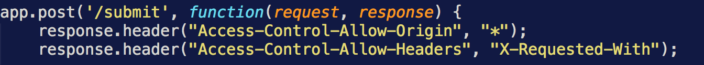
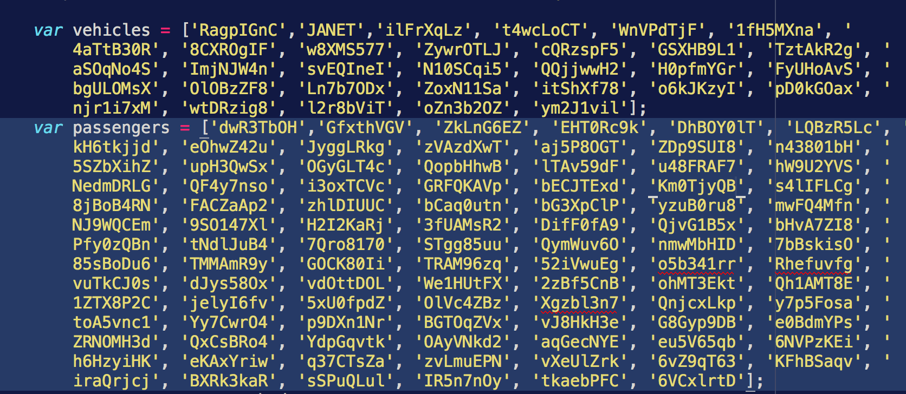
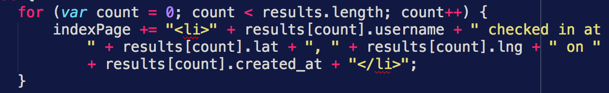
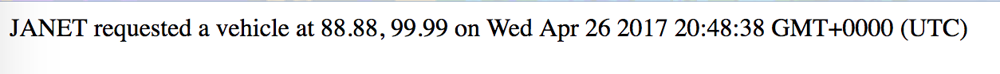

Assignment 4: Security and Privacy Assessment of Client-Side and Server-Side
By: Madeline Payne
Date: 26 April 2017
Introduction
In the POST method, the program takes a user's username, lat, and lng and inserts a document into the database for that user as either a passenger or vehicle based on the username. The program makes a created_at field which is also part of the document inserted.
In the GET method, if one specifies the username of a specific vehicle that they are looking for, the program will return the information in the specific document in the database linked to by the username. If no username is specified, the program will return a list of all vehicles that have a created_at field within the last five minutes.
Methodology
At first I tried to do injections. However because both the passenger and vehicle usernames were whitelisted, and the lat and lng were both checked it was impossible for me to do that since they always threw the incorrect data error.
Instead I had to focus on other errors simply be looking at the source code. That is how I found my three issues.
Abstract of Findings
By using an asterisk in the response header, it opens up the program to anyone because all domains are freely allowed to access our domain.
By including the whitelists, it is like leaving a list of all the login names lying around. If someone finds the whitelist, they have a full list of all the credentials and so would be able to login easily and manipulate the domain.
Publishing the locations of people is obviously just a bad idea. It is a privacy breach. If someone had malicious intentions they would be able to see a person's username and current location. Who knows what they would do with that information
Issues Found:
Issue 1
Issue Found: wildcard used as a value in the Access Control header
Location: index.js line 15
Severity: Medium/High - All domains are allowed. Attackers can easily extract the content of the page.
Description: found by reading the source code
Proof of vulnerability:
More Information
Resolution: Simply do not include "*" in the Access Control header. Instead all you need is response.header("Access-Control-Allow-Origin");
Issue 2
Issue Found: whitelist of passengers and vehicles directly in index.js
Location: index.js lines 18 and 19
Severity: High - If anyone malicious gets a hold of the whitelists, they can overload the server and make it crash
Description: found by reading the source code
Proof of vulnerability:
Resolution: Remove the whitelists from the code. Instead use a database or a table in a database to store all the valid IDs. Then consult that to check validity of username rather than the whitelist.
Issue 3
Issue Found: Geolocation for each person who check ins is displayed on the website
Location: index.js line 102
Severity: Low - Having the coordinates on display isn't that important unless someone is going to go plug those in to find out where exactly someone is for malicious purposes.
Description: found by reading the source code
Proof of vulnerability:

Resolution: Do not openly display the location that the person submitted from.
Conclusion
It was not possible to inject malicious javascript in the POST method due to the whitelists for both passengers and vehicles. This was a good protection although ultimately dangerous if people were able to get hold of the whitelist.
References